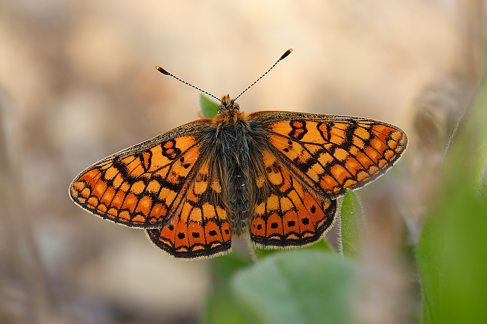
Marsh Fritillary (Euphydryas aurinia)
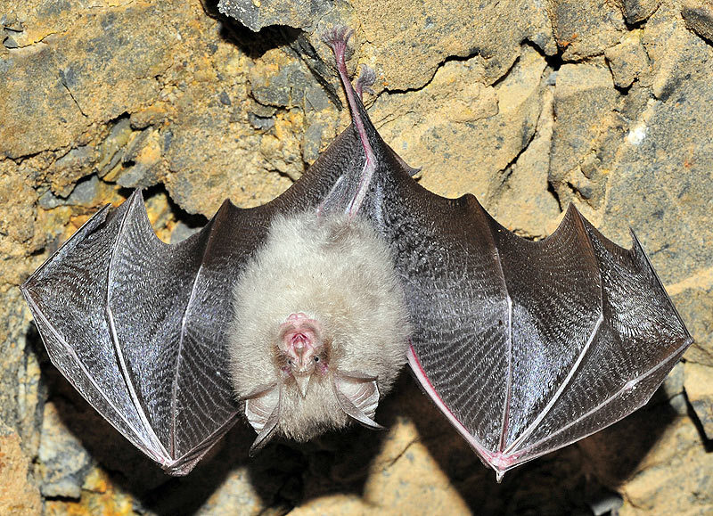
Lesser Horseshoe Bat (Rhinolophus hipposideros)

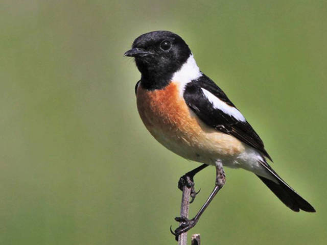
Stonechat (Saxicola torquata)
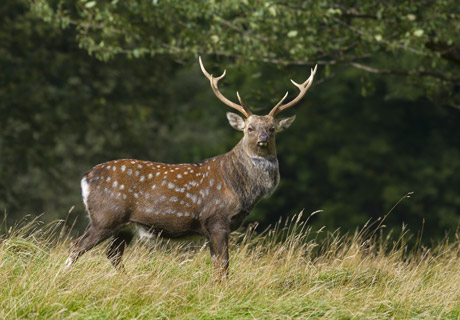
Sika Stags (Cervus nippon)
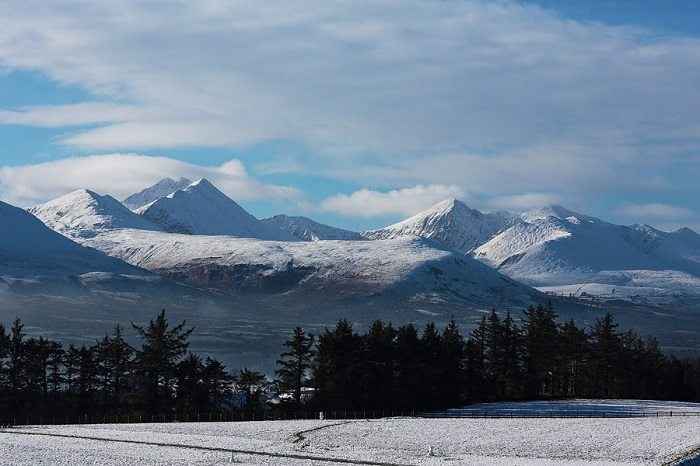
View from Aghadoe
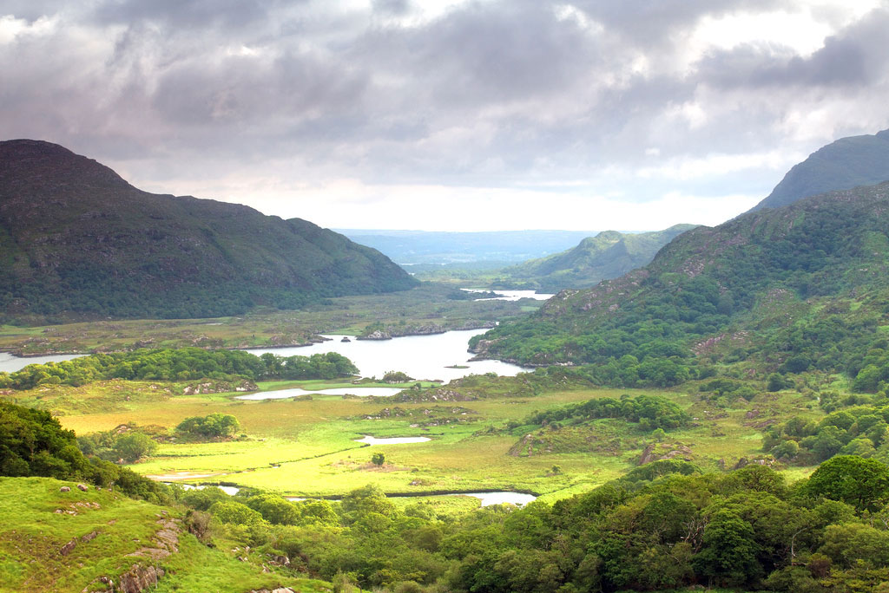
Ladies' View
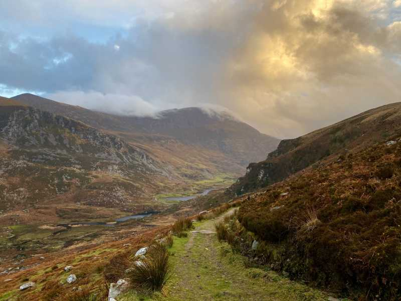
View from Strickeen Mountain

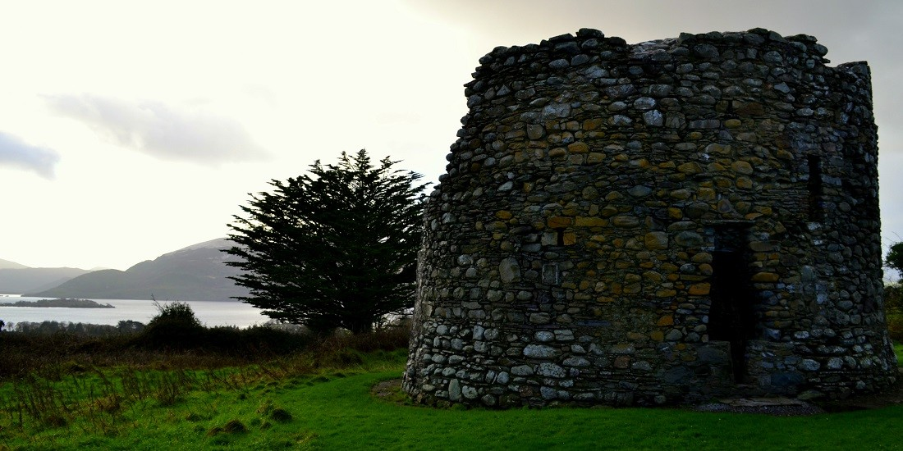
Aghadoe Ruins
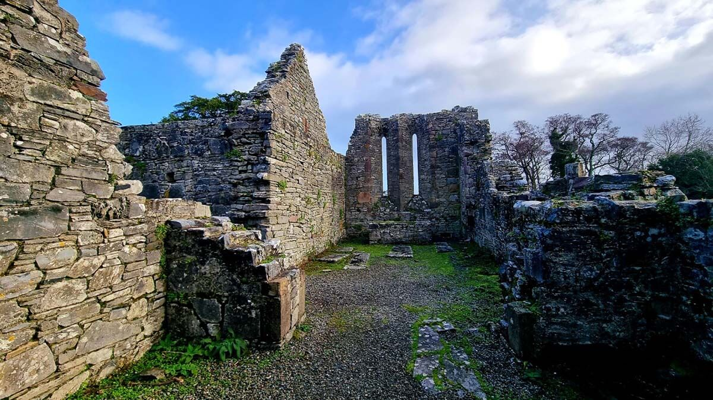
Inisfallen Ruins
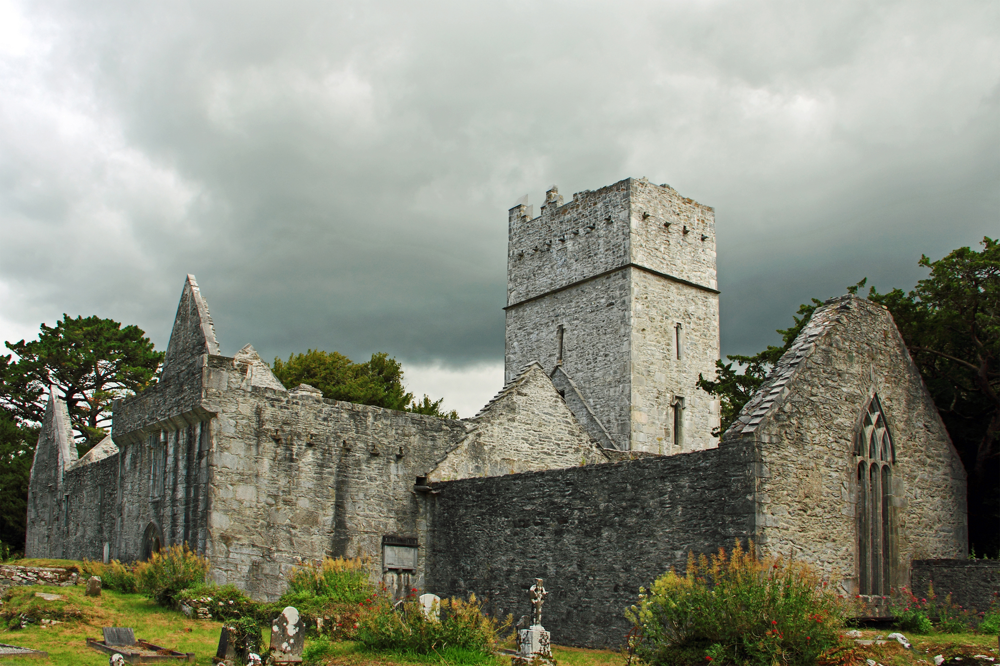
Muckross Abbey
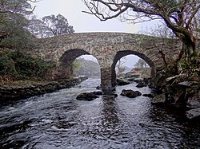
Old Weir Bridge
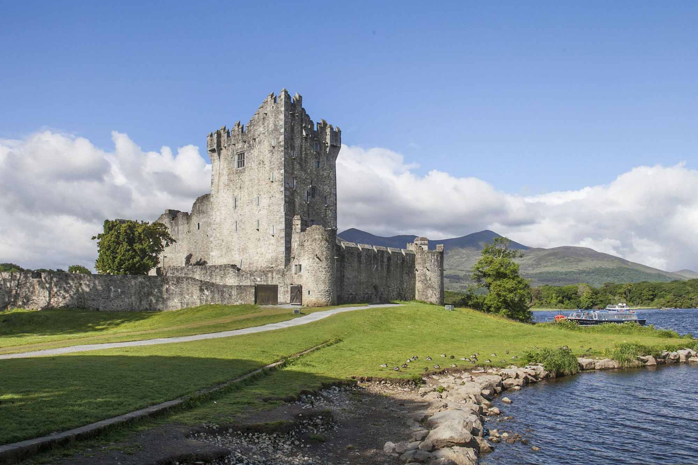
Ross Castle